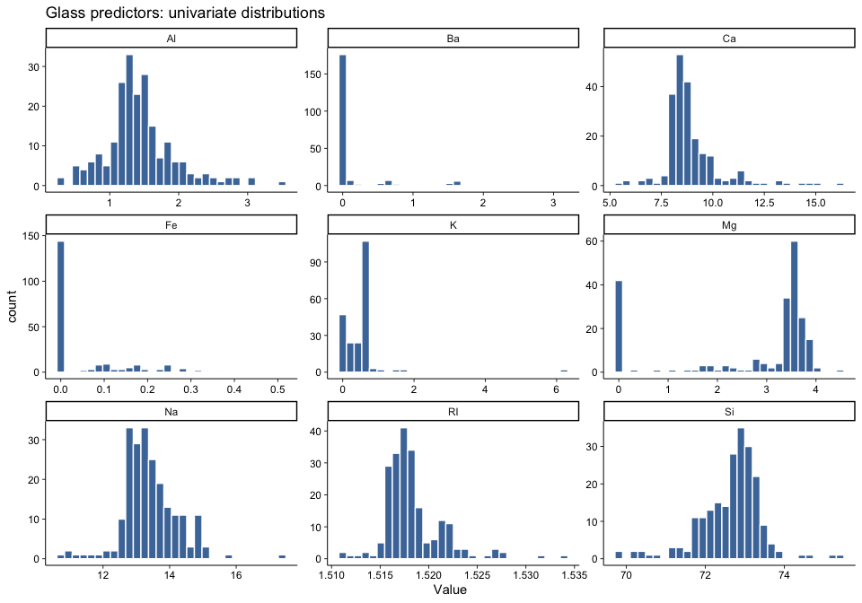
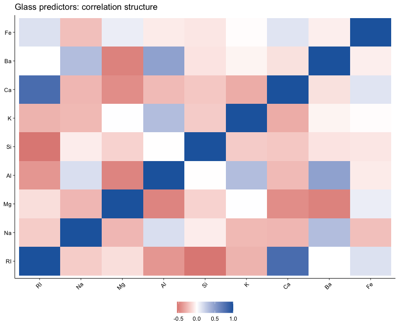

data(Glass)
str(Glass)## 'data.frame': 214 obs. of 10 variables:
## $ RI : num 1.52 1.52 1.52 1.52 1.52 ...
## $ Na : num 13.6 13.9 13.5 13.2 13.3 ...
## $ Mg : num 4.49 3.6 3.55 3.69 3.62 3.61 3.6 3.61 3.58 3.6 ...
## $ Al : num 1.1 1.36 1.54 1.29 1.24 1.62 1.14 1.05 1.37 1.36 ...
## $ Si : num 71.8 72.7 73 72.6 73.1 ...
## $ K : num 0.06 0.48 0.39 0.57 0.55 0.64 0.58 0.57 0.56 0.57 ...
## $ Ca : num 8.75 7.83 7.78 8.22 8.07 8.07 8.17 8.24 8.3 8.4 ...
## $ Ba : num 0 0 0 0 0 0 0 0 0 0 ...
## $ Fe : num 0 0 0 0 0 0.26 0 0 0 0.11 ...
## $ Type: Factor w/ 6 levels "1","2","3","5",..: 1 1 1 1 1 1 1 1 1 1 ...glass_num <- Glass |> select(-Type)Glass |>
pivot_longer(cols = -Type, names_to = "Predictor", values_to = "Value") |>
ggplot(aes(x = Value)) +
geom_histogram(bins = 30, fill = "#4C78A8", color = "white") +
facet_wrap(~ Predictor, scales = "free", ncol = 3) +
labs(title = "Glass predictors: univariate distributions")
glass_cor <- cor(glass_num)
glass_cor_long <- as.data.frame(as.table(glass_cor)) |>
rename(var1 = Var1, var2 = Var2, corr = Freq)
ggplot(glass_cor_long, aes(var1, var2, fill = corr)) +
geom_tile() +
scale_fill_gradient2(low = "#B2182B", mid = "white", high = "#2166AC", midpoint = 0) +
theme(axis.text.x = element_text(angle = 45, hjust = 1)) +
labs(title = "Glass predictors: correlation structure", x = NULL, y = NULL)
The distributions are not uniformly well-behaved: several predictors are concentrated near small values with long right tails, and at least one pair (RI and Ca) is strongly correlated.
outlier_counts <- sapply(glass_num, function(x) {
q <- quantile(x, c(0.25, 0.75), na.rm = TRUE)
iqr <- q[2] - q[1]
lo <- q[1] - 1.5 * iqr
hi <- q[2] + 1.5 * iqr
sum(x < lo | x > hi, na.rm = TRUE)
})
skew_tbl <- tibble(
predictor = names(glass_num),
skewness = sapply(glass_num, sample_skewness),
outliers_iqr = as.integer(outlier_counts)
) |>
arrange(desc(abs(skewness)))
skew_tbl## # A tibble: 9 x 3
## predictor skewness outliers_iqr
## <chr> <dbl> <int>
## 1 K 6.49 7
## 2 Ba 3.38 38
## 3 Ca 2.03 26
## 4 Fe 1.74 12
## 5 RI 1.61 17
## 6 Mg -1.14 0
## 7 Al 0.899 18
## 8 Si -0.724 12
## 9 Na 0.450 7Yes. There are clear outliers (especially for Ba,
Ca, and Al) and multiple skewed predictors
(most notably K, Ba, Ca,
Fe, and RI).
pp_glass <- preProcess(glass_num, method = c("YeoJohnson", "center", "scale"))
glass_trans <- predict(pp_glass, glass_num)
before_after_skew <- tibble(
predictor = names(glass_num),
skew_before = sapply(glass_num, sample_skewness),
skew_after = sapply(glass_trans, sample_skewness)
) |>
mutate(abs_reduction = abs(skew_before) - abs(skew_after)) |>
arrange(desc(abs_reduction))
head(before_after_skew, 9)## # A tibble: 9 x 4
## predictor skew_before skew_after abs_reduction
## <chr> <dbl> <dbl> <dbl>
## 1 K 6.49 -0.0712 6.42e+ 0
## 2 Ca 2.03 -0.207 1.82e+ 0
## 3 Al 0.899 0.000214 8.99e- 1
## 4 Na 0.450 -0.00889 4.41e- 1
## 5 Mg -1.14 -0.881 2.61e- 1
## 6 Si -0.724 -0.724 -3.33e-15
## 7 Fe 1.74 1.74 -5.77e-15
## 8 Ba 3.38 3.38 -7.55e-15
## 9 RI 1.61 1.61 -8.73e-14A practical preprocessing plan is Yeo-Johnson transformation (to reduce skew/outlier leverage) plus centering/scaling. This should improve many distance-based and linear classifiers.
data(Soybean)
str(Soybean)## 'data.frame': 683 obs. of 36 variables:
## $ Class : Factor w/ 19 levels "2-4-d-injury",..: 11 11 11 11 11 11 11 11 11 11 ...
## $ date : Factor w/ 7 levels "0","1","2","3",..: 7 5 4 4 7 6 6 5 7 5 ...
## $ plant.stand : Ord.factor w/ 2 levels "0"<"1": 1 1 1 1 1 1 1 1 1 1 ...
## $ precip : Ord.factor w/ 3 levels "0"<"1"<"2": 3 3 3 3 3 3 3 3 3 3 ...
## $ temp : Ord.factor w/ 3 levels "0"<"1"<"2": 2 2 2 2 2 2 2 2 2 2 ...
## $ hail : Factor w/ 2 levels "0","1": 1 1 1 1 1 1 1 2 1 1 ...
## $ crop.hist : Factor w/ 4 levels "0","1","2","3": 2 3 2 2 3 4 3 2 4 3 ...
## $ area.dam : Factor w/ 4 levels "0","1","2","3": 2 1 1 1 1 1 1 1 1 1 ...
## $ sever : Factor w/ 3 levels "0","1","2": 2 3 3 3 2 2 2 2 2 3 ...
## $ seed.tmt : Factor w/ 3 levels "0","1","2": 1 2 2 1 1 1 2 1 2 1 ...
## $ germ : Ord.factor w/ 3 levels "0"<"1"<"2": 1 2 3 2 3 2 1 3 2 3 ...
## $ plant.growth : Factor w/ 2 levels "0","1": 2 2 2 2 2 2 2 2 2 2 ...
## $ leaves : Factor w/ 2 levels "0","1": 2 2 2 2 2 2 2 2 2 2 ...
## $ leaf.halo : Factor w/ 3 levels "0","1","2": 1 1 1 1 1 1 1 1 1 1 ...
## $ leaf.marg : Factor w/ 3 levels "0","1","2": 3 3 3 3 3 3 3 3 3 3 ...
## $ leaf.size : Ord.factor w/ 3 levels "0"<"1"<"2": 3 3 3 3 3 3 3 3 3 3 ...
## $ leaf.shread : Factor w/ 2 levels "0","1": 1 1 1 1 1 1 1 1 1 1 ...
## $ leaf.malf : Factor w/ 2 levels "0","1": 1 1 1 1 1 1 1 1 1 1 ...
## $ leaf.mild : Factor w/ 3 levels "0","1","2": 1 1 1 1 1 1 1 1 1 1 ...
## $ stem : Factor w/ 2 levels "0","1": 2 2 2 2 2 2 2 2 2 2 ...
## $ lodging : Factor w/ 2 levels "0","1": 2 1 1 1 1 1 2 1 1 1 ...
## $ stem.cankers : Factor w/ 4 levels "0","1","2","3": 4 4 4 4 4 4 4 4 4 4 ...
## $ canker.lesion : Factor w/ 4 levels "0","1","2","3": 2 2 1 1 2 1 2 2 2 2 ...
## $ fruiting.bodies: Factor w/ 2 levels "0","1": 2 2 2 2 2 2 2 2 2 2 ...
## $ ext.decay : Factor w/ 3 levels "0","1","2": 2 2 2 2 2 2 2 2 2 2 ...
## $ mycelium : Factor w/ 2 levels "0","1": 1 1 1 1 1 1 1 1 1 1 ...
## $ int.discolor : Factor w/ 3 levels "0","1","2": 1 1 1 1 1 1 1 1 1 1 ...
## $ sclerotia : Factor w/ 2 levels "0","1": 1 1 1 1 1 1 1 1 1 1 ...
## $ fruit.pods : Factor w/ 4 levels "0","1","2","3": 1 1 1 1 1 1 1 1 1 1 ...
## $ fruit.spots : Factor w/ 4 levels "0","1","2","4": 4 4 4 4 4 4 4 4 4 4 ...
## $ seed : Factor w/ 2 levels "0","1": 1 1 1 1 1 1 1 1 1 1 ...
## $ mold.growth : Factor w/ 2 levels "0","1": 1 1 1 1 1 1 1 1 1 1 ...
## $ seed.discolor : Factor w/ 2 levels "0","1": 1 1 1 1 1 1 1 1 1 1 ...
## $ seed.size : Factor w/ 2 levels "0","1": 1 1 1 1 1 1 1 1 1 1 ...
## $ shriveling : Factor w/ 2 levels "0","1": 1 1 1 1 1 1 1 1 1 1 ...
## $ roots : Factor w/ 3 levels "0","1","2": 1 1 1 1 1 1 1 1 1 1 ...soy_x <- Soybean |> select(-Class)soy_nzv <- nearZeroVar(soy_x, saveMetrics = TRUE)
soy_nzv |>
tibble::rownames_to_column("predictor") |>
arrange(desc(nzv), desc(freqRatio)) |>
select(predictor, nzv, zeroVar, freqRatio, percentUnique) |>
head(15)## predictor nzv zeroVar freqRatio percentUnique
## 1 mycelium TRUE FALSE 106.500000 0.2928258
## 2 sclerotia TRUE FALSE 31.250000 0.2928258
## 3 leaf.mild TRUE FALSE 26.750000 0.4392387
## 4 shriveling FALSE FALSE 14.184211 0.2928258
## 5 int.discolor FALSE FALSE 13.204545 0.4392387
## 6 lodging FALSE FALSE 12.380952 0.2928258
## 7 leaf.malf FALSE FALSE 12.311111 0.2928258
## 8 seed.size FALSE FALSE 9.016949 0.2928258
## 9 seed.discolor FALSE FALSE 8.015625 0.2928258
## 10 leaves FALSE FALSE 7.870130 0.2928258
## 11 mold.growth FALSE FALSE 7.820896 0.2928258
## 12 roots FALSE FALSE 6.406977 0.4392387
## 13 leaf.shread FALSE FALSE 5.072917 0.2928258
## 14 fruiting.bodies FALSE FALSE 4.548077 0.2928258
## 15 seed FALSE FALSE 4.139130 0.2928258Some predictors are highly imbalanced (very large
freqRatio) and a subset are flagged as near-zero-variance,
which matches the chapter’s degenerate-distribution warning.
missing_by_predictor <- colSums(is.na(soy_x)) |>
sort(decreasing = TRUE)
head(missing_by_predictor, 12)## hail sever seed.tmt lodging germ
## 121 121 121 121 112
## leaf.mild fruiting.bodies fruit.spots seed.discolor shriveling
## 108 106 106 106 106
## leaf.shread seed
## 100 92missing_by_class <- Soybean |>
mutate(missing_count = rowSums(is.na(across(-Class)))) |>
group_by(Class) |>
summarise(
n = n(),
mean_missing_predictors = mean(missing_count),
pct_rows_with_any_missing = mean(missing_count > 0) * 100,
.groups = "drop"
) |>
arrange(desc(mean_missing_predictors))
missing_by_class## # A tibble: 19 x 4
## Class n mean_missing_predict~1 pct_rows_with_any_mi~2
## <fct> <int> <dbl> <dbl>
## 1 2-4-d-injury 16 28.1 100
## 2 cyst-nematode 14 24 100
## 3 herbicide-injury 8 20 100
## 4 phytophthora-rot 88 13.8 77.3
## 5 diaporthe-pod-&-stem-bli~ 15 11.8 100
## 6 alternarialeaf-spot 91 0 0
## 7 anthracnose 44 0 0
## 8 bacterial-blight 20 0 0
## 9 bacterial-pustule 20 0 0
## 10 brown-spot 92 0 0
## 11 brown-stem-rot 44 0 0
## 12 charcoal-rot 20 0 0
## 13 diaporthe-stem-canker 20 0 0
## 14 downy-mildew 20 0 0
## 15 frog-eye-leaf-spot 91 0 0
## 16 phyllosticta-leaf-spot 20 0 0
## 17 powdery-mildew 20 0 0
## 18 purple-seed-stain 20 0 0
## 19 rhizoctonia-root-rot 20 0 0
## # i abbreviated names: 1: mean_missing_predictors, 2: pct_rows_with_any_missingMissingness is not uniform. Some predictors have many missing values, and certain classes have substantially more missing fields per row than others, indicating class-related missingness patterns.
# Step 1: remove predictors with very high missingness
missing_prop <- colMeans(is.na(soy_x))
cutoff <- 0.25
keep_vars <- names(missing_prop[missing_prop <= cutoff])
soy_reduced <- soy_x[, keep_vars, drop = FALSE]
# Step 2: mode-impute remaining categorical missing values
soy_imputed <- soy_reduced |>
mutate(across(everything(), mode_impute))
strategy_summary <- tibble(
original_predictors = ncol(soy_x),
predictors_after_filter = ncol(soy_reduced),
total_missing_before = sum(is.na(soy_x)),
total_missing_after = sum(is.na(soy_imputed)),
missing_cutoff_used = cutoff
)
strategy_summary## # A tibble: 1 x 5
## original_predictors predictors_after_filter total_missing_before
## <int> <int> <int>
## 1 35 35 2337
## # i 2 more variables: total_missing_after <int>, missing_cutoff_used <dbl>I would use this two-step approach: filter predictors with very high missingness first, then mode-impute the rest. This preserves most information while avoiding very sparse predictors.
data(BloodBrain)
length(logBBB)## [1] 208dim(bbbDescr)## [1] 208 134bbb_nzv <- nearZeroVar(bbbDescr, saveMetrics = TRUE)
bbb_nzv |>
tibble::rownames_to_column("predictor") |>
filter(nzv | zeroVar) |>
arrange(desc(zeroVar), desc(freqRatio))## predictor freqRatio percentUnique zeroVar nzv
## 1 negative 207.00000 0.9615385 FALSE TRUE
## 2 alert 103.00000 0.9615385 FALSE TRUE
## 3 frac.anion7. 47.75000 5.7692308 FALSE TRUE
## 4 a_acid 33.50000 1.4423077 FALSE TRUE
## 5 vsa_acid 33.50000 1.4423077 FALSE TRUE
## 6 peoe_vsa.2.1 25.57143 5.7692308 FALSE TRUE
## 7 peoe_vsa.3.1 21.00000 7.2115385 FALSE TRUEYes. There are multiple near-zero-variance predictors (but no exact zero-variance predictors), so removing these before modeling is reasonable.
bbb_cor <- cor(bbbDescr, use = "pairwise.complete.obs")
num_pairs_gt_075 <- sum(abs(bbb_cor[upper.tri(bbb_cor)]) > 0.75)
num_pairs_gt_090 <- sum(abs(bbb_cor[upper.tri(bbb_cor)]) > 0.90)
remove_075 <- findCorrelation(bbb_cor, cutoff = 0.75)
remove_090 <- findCorrelation(bbb_cor, cutoff = 0.90)
tibble(
total_predictors = ncol(bbbDescr),
pairs_abs_corr_gt_075 = num_pairs_gt_075,
pairs_abs_corr_gt_090 = num_pairs_gt_090,
remove_at_075 = length(remove_075),
remain_at_075 = ncol(bbbDescr) - length(remove_075),
remove_at_090 = length(remove_090),
remain_at_090 = ncol(bbbDescr) - length(remove_090)
)## # A tibble: 1 x 7
## total_predictors pairs_abs_corr_gt_075 pairs_abs_corr_gt_090 remove_at_075
## <int> <int> <int> <int>
## 1 134 321 73 66
## # i 3 more variables: remain_at_075 <int>, remove_at_090 <int>,
## # remain_at_090 <int>There are strong correlations among descriptors. Correlation filtering can substantially reduce dimensionality (especially at cutoff 0.75), so this has a meaningful effect on how many predictors remain for modeling.